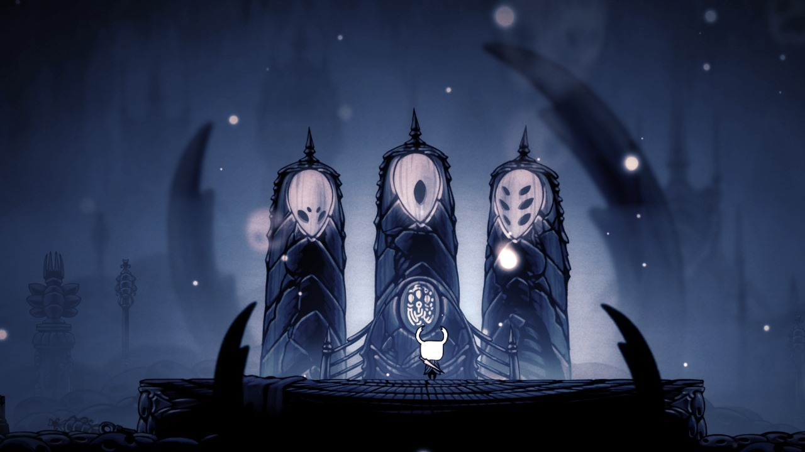
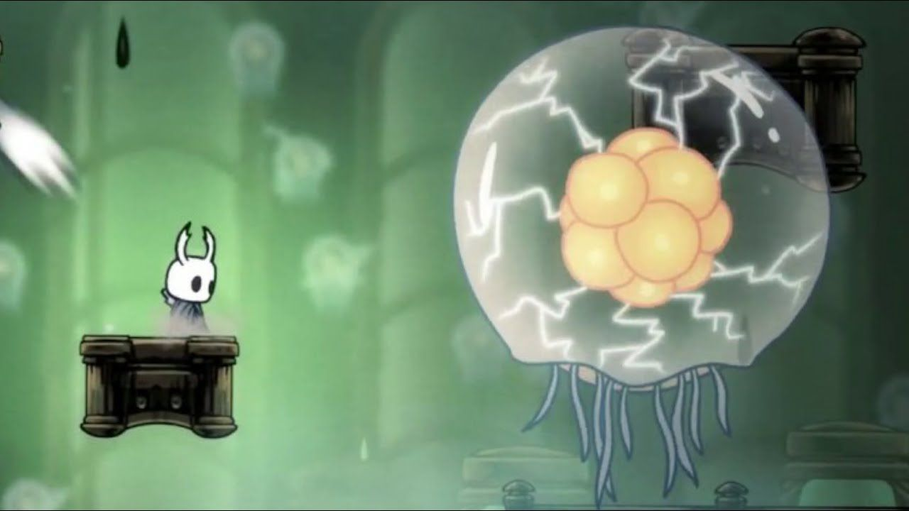
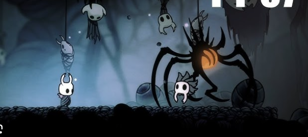

Los Guardianes de los Soñadores

Los Soñadores (Monomon la Maestra, Lurien el Vigía y Herrah la Bestia) se sumieron en un sueño eterno para sellar el Templo del Huevo Negro y contener a Destello. Para asegurar que nadie rompiera este sello, se designaron poderosos guardianes o fortalezas infranqueables para proteger sus cuerpos durmientes.
Derrotar a estos jefes no solo es un desafío de habilidad, sino un paso obligatorio en la historia principal para acceder a los finales del juego. A continuación, analizamos a fondo a las entidades que resguardan a los Soñadores.
Uumuu: El Guardián de Monomon
Ubicado en lo profundo de los Archivos de las Maestras en el Cañón Nublado, Uumuu es una criatura inteligente y eléctrica diseñada específicamente para proteger a Monomon. Su núcleo está cubierto por una membrana gelatinosa que lo hace completamente inmune a los ataques físicos y mágicos del Caballero durante la mayor parte del combate.

- 📍 Ubicación: Archivos de las Maestras
- ⚡ Ataques: Ráfagas eléctricas y seguimiento
- 🛡️ Defensa: Barrera invulnerable
- 🤝 Aliado: Quirrel acude en tu ayuda
La clave de esta batalla no es la fuerza bruta, sino la supervivencia y la paciencia. Debes esquivar sus ataques eléctricos moviéndote entre las plataformas hasta que tu aliado Quirrel aparezca y logre perforar la membrana de Uumuu, dejándolo vulnerable por unos valiosos segundos donde debes descargar todo tu daño posible.
Los Caballeros Vigía: La Élite de Lurien
Protegiendo la Torre del Vigía en lo alto de la Ciudad de Lágrimas, encontramos los cascarones vacíos de la antigua élite de Hallownest. Animados por extrañas moscas infectadas, estos colosos de armadura cobran vida de dos en dos, convirtiendo el combate en una agobiante batalla contra múltiples objetivos simultáneos.
"Sus armaduras son pesadas, pero su movimiento es implacable. Ruedan y rebotan por la sala con una velocidad letal, obligándote a dominar el arte del salto pogo."
En total, debes derrotar a seis de estos Caballeros a lo largo de la pelea. Usar hechizos de área como el "Espíritu Vengativo" (o su mejora, el Alma Sombría) es altamente recomendado, ya que puedes golpear a varios caballeros a la vez. Además, la Capa Sombría es invaluable para atravesarlos cuando te acorralan rodando.
La Guarida de la Bestia: El Dominio de Herrah
Curiosamente, Herrah la Bestia no cuenta con un "jefe" tradicional con barra de salud. Su protección recae en el entorno mismo: Nido Profundo. Llegar hasta ella requiere atravesar la Guarida de la Bestia, un oscuro y opresivo laberinto infestado de Acechadores (Devouts), trampas letales y pasillos engañosos. La verdadera prueba de este "jefe" es tu resistencia para sobrevivir al entorno más hostil del mapa.
